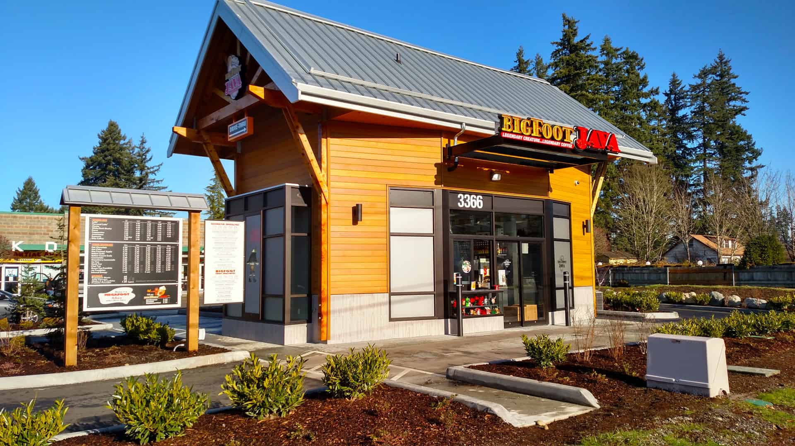

Image posted by Petra General Contractors retrieved from this website
The Washington based drive-thru coffee shop offers a variety of drinks and pastries that your heart will desire and relives your Bigfoot lore that expresses the culture of the Pacific Northwest. The company boasts a 3.1 star review from over 1300 reviews on Yelp, and is open 24 hours for busy mornings, midday runs, and late night cravings. One of my favorites is the classic white chocolate mocha with a dash of whip cream, which warms me up while on the drive to work in the morning along with the crispy ciabatta egg and cheese sandwich.
Some specialities that Big Foot offers include: Nutty Yeti, Mythical Mocha, Marionberry Mocha Monster, and the Sasquatch Tracks Frostbite. And of course, if you need something more refreshing they also offer a selection of fruit drinks such as: Mythical Mango, Strawberry Sasquatch, Berry and the Beast.